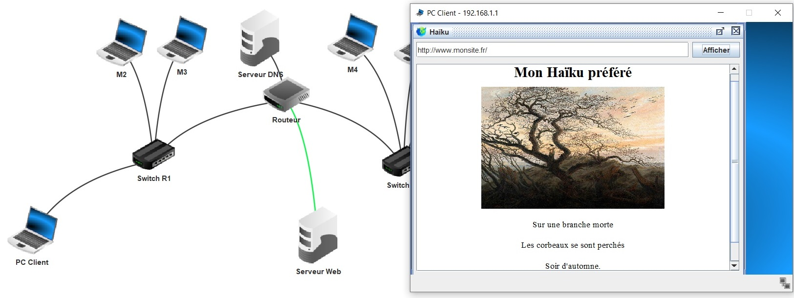
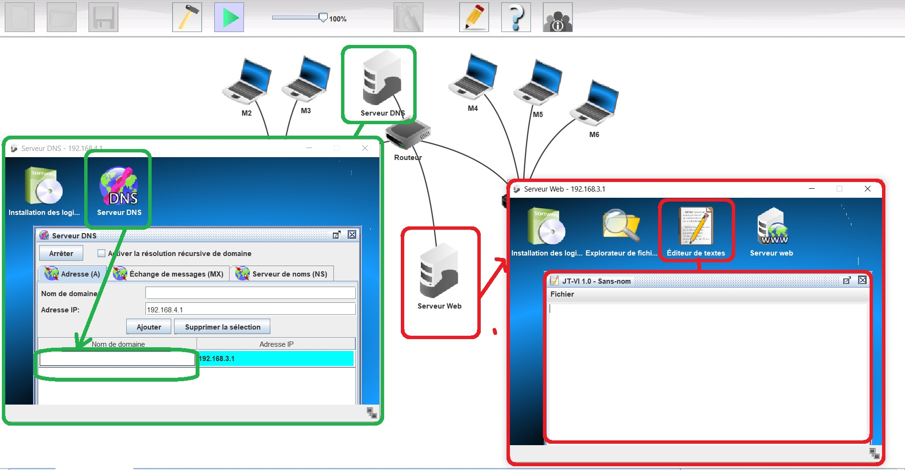
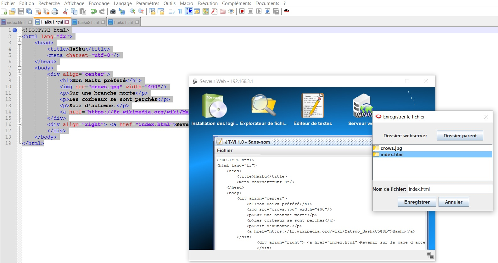

Pour aller plus loin...
Le but est de simuler un serveur web avec le logiciel Filius et ainsi connecter un client avec la page web que l'on vient de créer comme sur l'exemple ci-dessous (j'ai nommé mon site : "www.monsite.fr" ) :

Récupérez le fichier Filius : serverWeb
Ouvrez ce fichier sous Filius.
En vous mettant en simulation (triangle vert) :

Allez sur le serveur DNS et donnez un nom à votre site.
Allez dans ServeurWeb puis d'éditeur de textes.
Faites un copier/coller de votre page HTML comme ci-dessous :

En cliquant sur Fichier (de la fenetre de l'éditeur de textes) allez sur "enregistrer sous" puis allez dans le dossier webserver. Enregistrez votre fichier HTML sous le nom de fichier : index.html faites Enregistrer.
Constatez le bon fonctionnement de votre site internet depuis le PC Client.
Créé avec HelpNDoc Personal Edition: Créer des aides HTML, DOC, PDF et des manuels depuis une même source